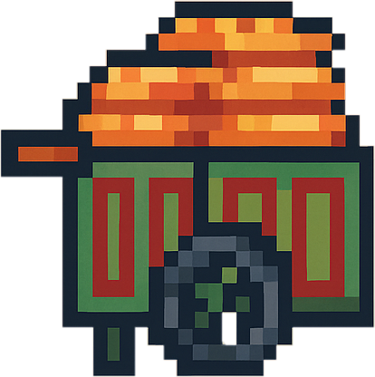
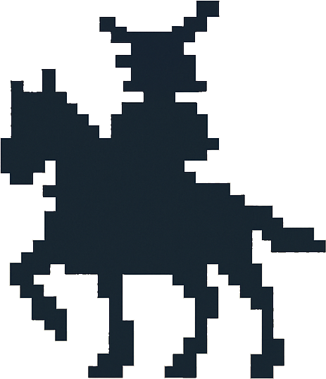

Researcher at Tohoku University. Works on civil society organisations in Palestine and Japan.
Comparative work on Palestinian and Japanese NGOs. Focus on governance, knowledge transfer, and the informal practices that sustain organisations when formal systems are weak or absent.
Book project comparing civil society in Japan and Palestine, working title Structure and Agency in Crisis. First draft expected by end of 2026.
JSPS Postdoctoral Fellowship through 2027. Lecturer at Arab American University Palestine. Regular fieldwork in Jerusalem and Ramallah.

